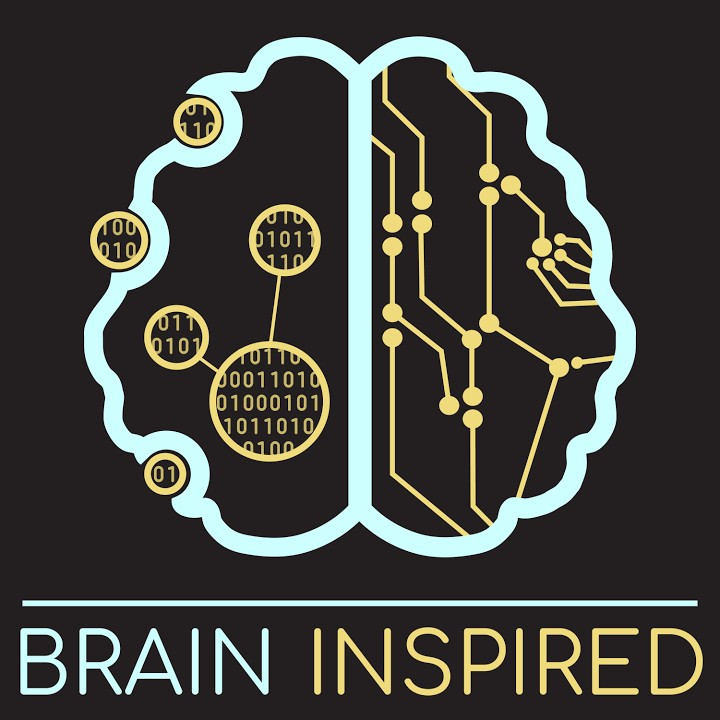
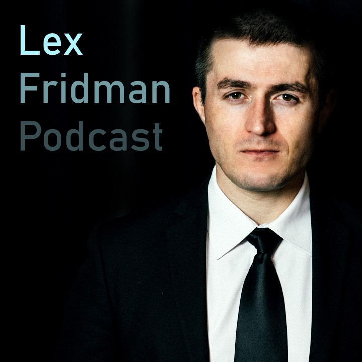

Home
People
Publications
Teaching
Resources
Gallery
Fantastic Ideas and Where to Find Them
Podcasts

Brain Inspired - Exploring neuroscience and AI with leading researchers

Lex Fridman Podcast - Conversations on AI, science, and technology
Mindscape - Deep conversations on physics, philosophy, and the nature of reality
WeChat Official Accounts
机器之心
神经现实
Old Stuff
Skinner: Verbal Behavior
Chomsky: Review of Verbal Behavior
Shannon: A Mathematical Theory of Communication
Elman: Finding Structure in Time
Elman: Rethinking Innateness